Payment / Gift Experience
QUOカードPay
アプリ版・ブラウザ版・販売サイト・FAQのUI/UX設計を担当。デザイナー1人で立ち上げから参加し、ワイヤー、UI、ユーザー調査、Figmaプロトタイプ検証、CSSコーディングまで担当しました。
RoleUI/UX Design
MethodUser Test
OutputApp / Web / FAQ
構想段階のアイデアを、検証できるプロトタイプへ。業務フロー、ユーザー体験、実装制約を整理し、現場で使えるUIとして具体化します。
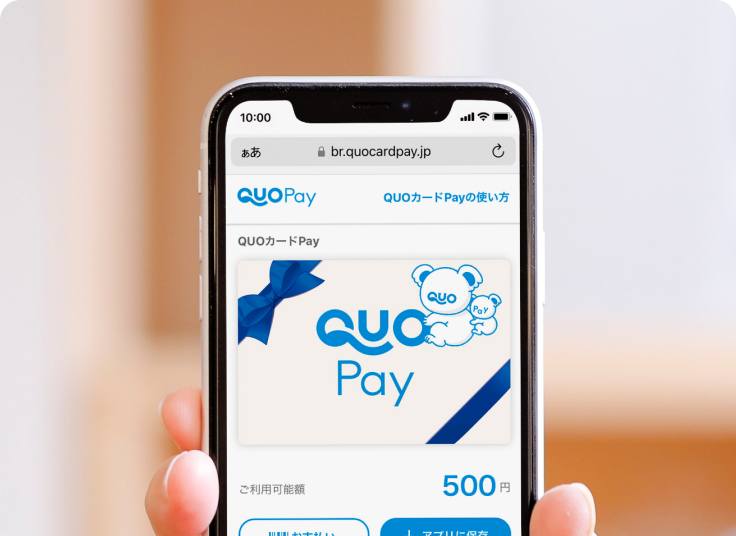
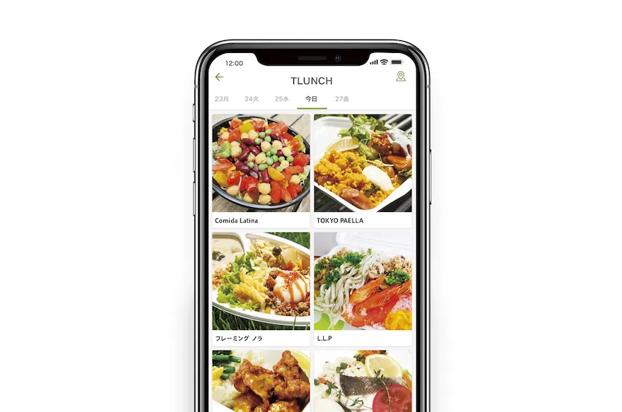
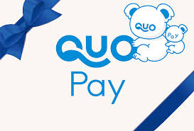
強みは、単に画面をきれいに作ることではなく、要件が固まりきっていない段階から入り、ユーザー調査、現場観察、ワイヤーフレーム、UIデザイン、プロトタイプを通じて、事業側・開発側・ユーザーの間にある曖昧さを具体化できることです。
QUOカードPayでは、老若男女が迷わず使える決済・ギフト体験を目指し、Figmaプロトタイプとユーザー調査を用いて改善を重ねました。
キッチンカーサービスでは、観察・インタビューに加え、自ら仕入れ、仕込み、販売、撤収まで体験し、サービス課題を抽出しました。
HTML/CSS、JavaScript、PHP、MySQL、PostgreSQL、サーバーまわりにも触れてきたため、実装や運用を踏まえた現実的なUI設計ができます。
ChatGPT、Gemini、Claude、Cursor等を用いて、仕様の壁打ち、UIパターン検討、HTML/CSSモック作成、批評検証を高速化。手を早く動かすだけでなく、関係者との認識合わせを早め、より本質的な体験設計に時間を使える状態をつくります。
大きな余白、強い見出し、事例ごとのビジュアル。ポートフォリオPDFの構成を活かしながら、採用側が短時間で強みを理解できるように再編集しています。
アプリ版・ブラウザ版・販売サイト・FAQのUI/UX設計を担当。デザイナー1人で立ち上げから参加し、ワイヤー、UI、ユーザー調査、Figmaプロトタイプ検証、CSSコーディングまで担当しました。
購入者、出店者、土地オーナーなど複数の立場を踏まえ、現場観察、インタビュー、自らの運営体験を通じてサービス体験を設計。売上管理、出店募集、事前決済を含むプロトタイプ検証を行いました。
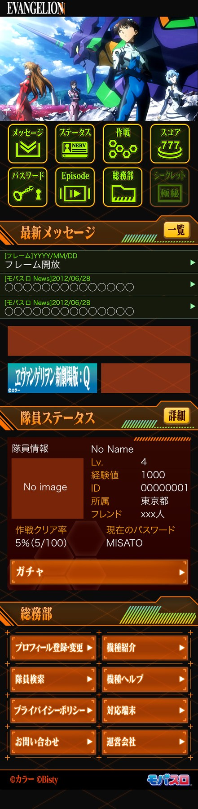
Disney mobile、QUOカードPay、HitmeUP、一筆書き、モバスロエヴァなど、運用型アプリからカジュアルゲームまで幅広く担当。データを見ながら継続率や賑わいを改善する提案・検証にも関わりました。
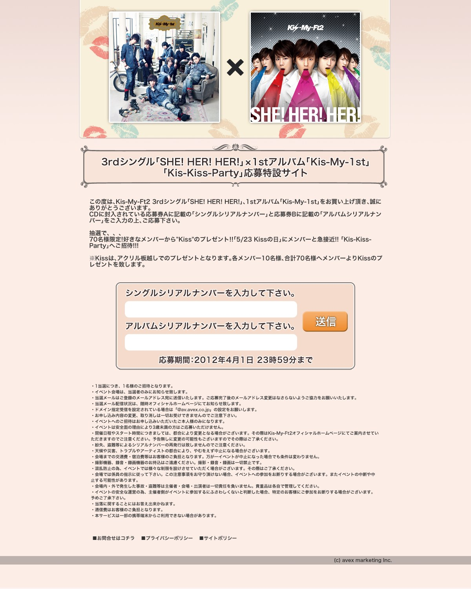
Disney mobile、Disneyアプリ、Disney CARDCLUB、Disney.co.jpなどで、ブランド世界観とレギュレーションを守りながら、サイト、アプリ、LP、バナー、動画を制作・運用しました。
代表画像を絞り込み、決済UX、O2Oサービス、大手IP、プロモーション制作の厚みが短時間で伝わるように構成しています。
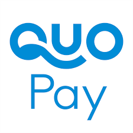
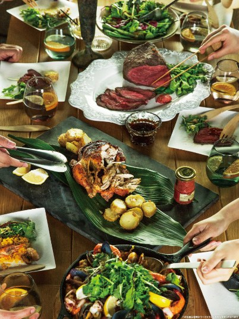
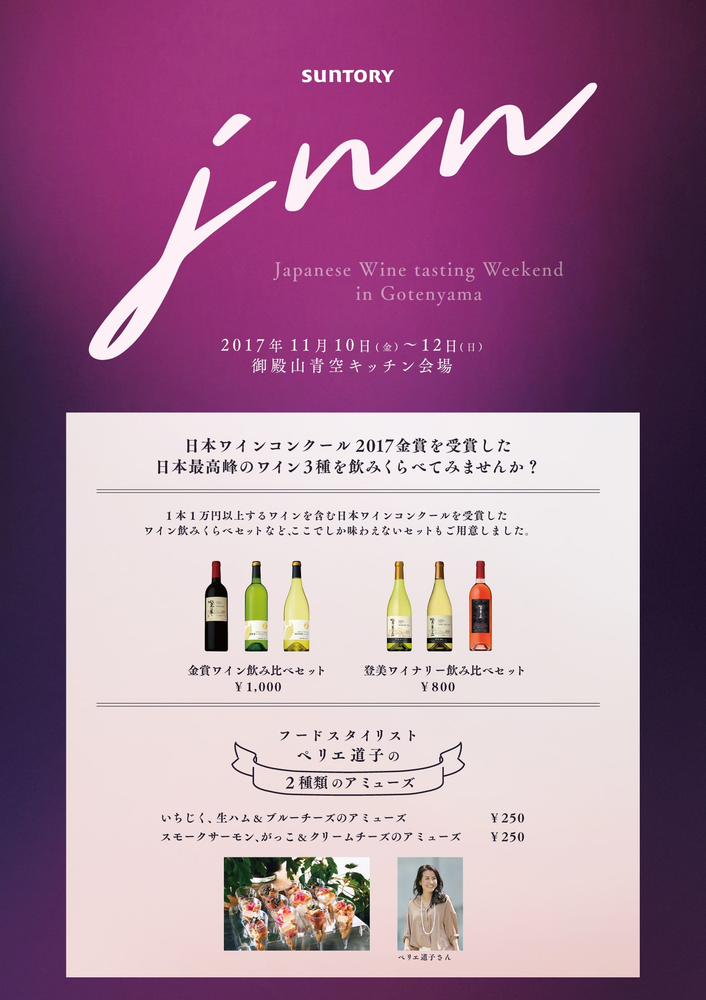
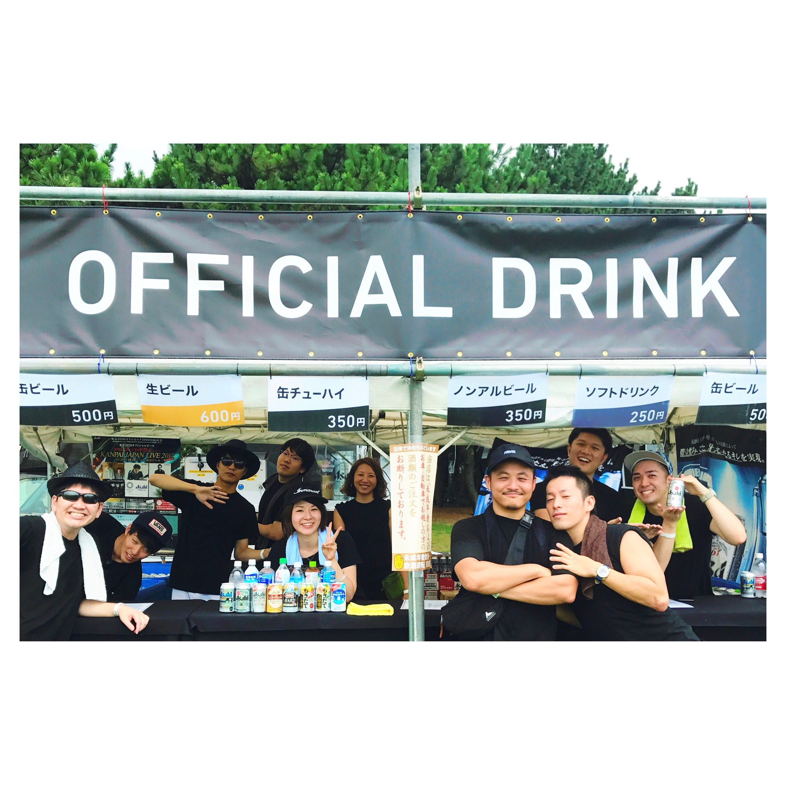
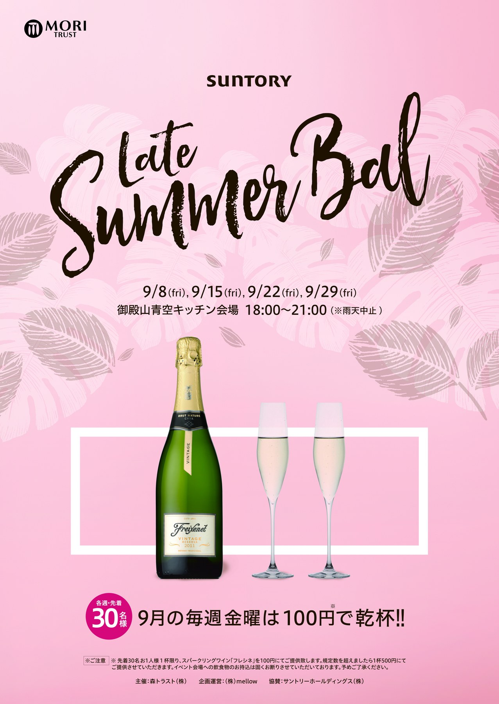
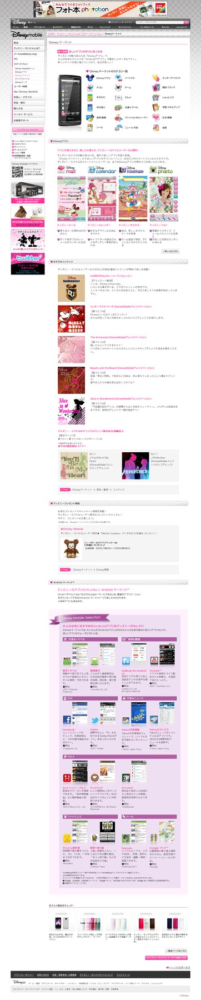
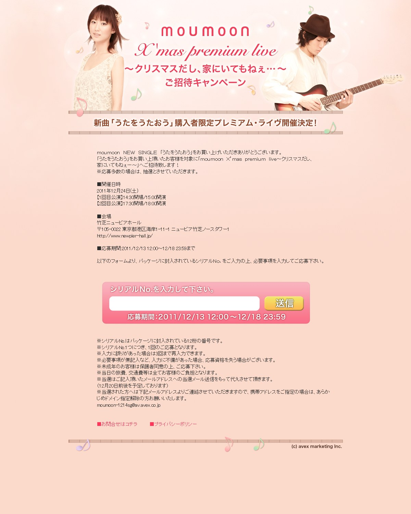
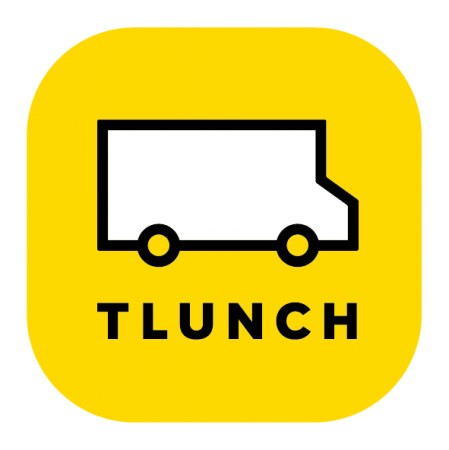
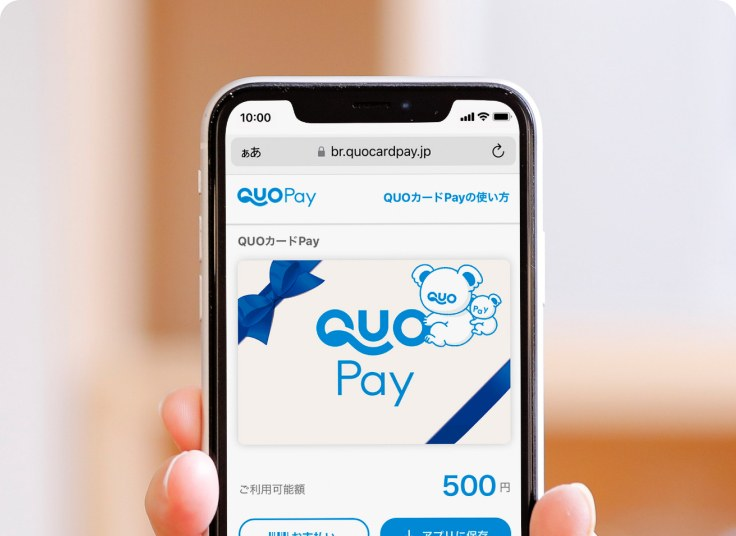
Figmaだけで終わらない。ユーザー調査、現場観察、UI設計、HTML/CSS、PHP、DB、サーバー理解までを、プロダクトを前に進めるために使います。
情報設計、ユーザーフロー、ワイヤーフレーム、プロトタイピング、ユーザー調査、ユーザビリティテスト。
業務フロー整理、管理画面、検索、入力、ステータス管理、申請・受付フロー、継続的改善。
HTML、CSS、JavaScript、PHP、MySQL、PostgreSQL、サーバー運用基礎。開発と会話できる設計。
Photoshop、Illustrator、ロゴ、ブランドトーン、動画、広告・販促物、Webディレクション。
BtoB/BtoG領域の業務プロダクト、新規事業、行政DX関連サービスのUI/UX設計、プロトタイピング、ブランド設計。
金継ぎワークショップの運営、Web UI/UX、予約システム、教科書、動画、インバウンド施策。
QUOカードPayのUI/UX設計。アプリ、ブラウザ、販売サイト、FAQ、ユーザー調査、CSS。
All About、picup、イチオシなどのWebサービスにおけるUI/UX改善。
キッチンカー関連サービスの体験設計、アプリ制作、グロース改善、イベント・空間・撮影。
ひかりTVゲーム、ひかりTVアプリ関連のWeb・アプリデザイン、CMS運用。
Disney mobile、Disney web、avex、モバスロ エヴァ、ポケモン、コカコーラ関連などの制作・運用。
Disney.jp、Disney CARDCLUB、映画・海外ドラマ関連サイトの制作、コーディング、運用。
住宅系Webサービスの広告営業、サイト運用、解析、ユーザー動向調査、バナー制作。
UI/UX設計、プロダクト改善、開発連携、ブランド設計まで。複雑な要件を、現実に動くプロダクト体験として整えます。